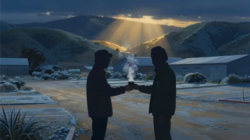

There’s a version of kindness that announces itself.
It shows up with fanfare, with recognition, with a moment everyone can point to and say — that’s when it happened. That’s when things changed.
And then there’s the other kind.
In the early seasons of M*A*S*H, before the show became a cultural institution, the cast and crew reported to the Malibu mountains before sunrise. Cold mornings. Frost on the parking lot. Everyone warming their hands around hot cups of coffee grabbed on the drive in.
Everyone except Jamie Farr.

On screen, Jamie was impossible to miss — Corporal Klinger, loud and hilarious in pearls and heels, commanding every scene he walked into. Off screen, he was a working actor supporting a family on a tight budget, and he couldn’t justify the expense. So he stood in the cold every morning in his thin Army undershirt and said nothing.
He never complained. He never asked.
But Mike Farrell noticed.
Mike played B.J. Hunnicutt — and he understood something important about men like Jamie. You don’t hand them money. You don’t offer charity. Because pride matters. Dignity matters. So Mike came up with a different approach.
The next morning at 5:30 AM, Mike walked onto the set holding two cups of coffee, looking irritated.
“Unbelievable. The diner messed up my order again.”
He spotted Jamie, walked straight over, and shoved one cup toward him.
“They gave me two. Take this before I throw it away.”
Jamie hesitated. Then he slowly wrapped his freezing hands around the warm cup.
“Thanks, Mike.”
Mike shrugged and walked away like it meant nothing.
The next morning, the diner “messed up” again. Two coffees. Same complaint. Same annoyed sigh. Same cup handed over.
For three straight months through that cold California winter, Mike Farrell told the exact same lie every single morning.
Years later, Jamie talked about those mornings with emotion in his voice. “Mike knew I wouldn’t accept help. So he made sure it never looked like help.”